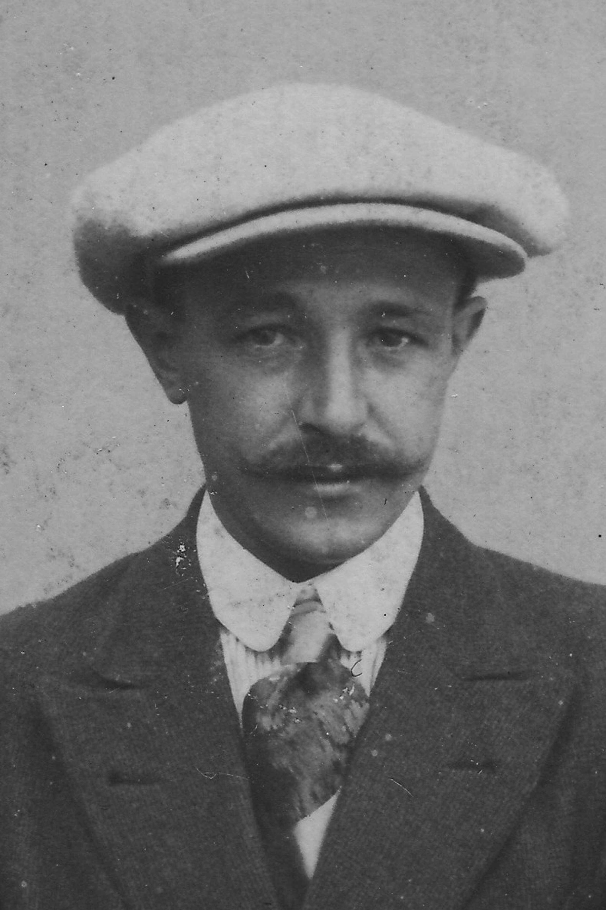

Belgische Werkliedenpartij
Hoe is Sooi met de Belgische Werkliedenpartij in aanraking gekomen? Sooi kwam in de partijwerking terecht onder de impuls de vader van zijn lief Joske Kersters. In de diamantslijperij overhaalt zijn werkmakker Walter Suykerbuyk in 1922 bij de BWP te komen. Sooi wordt voorzitter van de socialistische oudstrijdersbond en bode van de Volkskinderen.
Hun doel was de mens bevrijden van vrees en nood met als opzet de strijd tegen de angst voor de oude dag, de angst dat ziekte tot armoe leidt, dat werkloosheid zwarte miserie en soepkeukens betekent.
In de jaren 20 worden tal van socialistische doelstellingen bewerkstelligd: verplicht onderwijs tot 14 jaar, de stemplicht, de 48-uren werkweek, de wetten op de zondagsrust, de werklozensteun en de intrekking van art 310 uit het strafwetboek inzake stakingsverbod. In 1924 spreekt men het eerst over pensioenregeling en ook de anti-alcoholwet van Emile Vandervelde dateert uit die jaren;
In 1921 organiseerde men voor het eerst gemeenteraadsverkiezingen waarbij ook het gewone werkvolk mocht deelnemen. Er komen in Essen 3 partijen op : katholieken liberalen en socialisten.
De verwachtingen bij de socialisten zijn hoog gespannen maar de desillusie is navenant, één verkozene Octaaf Lauwers gaat naar de gemeenteraad. In 1926 wordt Lauwers herkozen en wegens gezondheidsredenen neemt hij in 1927 ontslag. Douanier Gust Peeters vervangt hem in de gemeenteraad en ook als voorzitter.